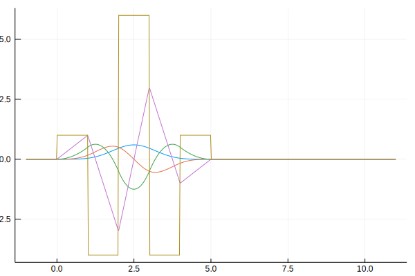

B-spline evaluation
Spline evalution can be done in two ways. The first one uses the spline constructors in B-spline constructors.
f = BSpline(3)
x = LinRange(-1,5,10)
f.(x)10-element Array{Float64,1}:
0.0
0.0
0.006172839506172841
0.16666666666666657
0.5740740740740737
0.5740740740740743
0.16666666666666852
0.006172839506170929
0.0
0.0 The second one is uses the internal function in Internal evaluation functions.
CardinalBSplines.evaluate_BSpline.(Val{3}(), x, Float64)10-element Array{Float64,1}:
0.0
0.0
0.006172839506172841
0.16666666666666657
0.5740740740740737
0.5740740740740743
0.16666666666666852
0.006172839506170929
0.0
0.0 No allocation happens during evaluation
x = LinRange(-1,5,10000);
s = Array{Float64}(undef, 10000);
s .= f.(x);
@time s .= f.(x);
0.000165 seconds (5 allocations: 208 bytes)Examples
B-splines
plot(legend=false)
[plot!(x,BSpline(degree).(x)) for degree in 0:10]/home/travis/.julia/packages/GR/TMylY/src/../deps/gr/bin/gksqt: error while loading shared libraries: libQt5Widgets.so.5: cannot open shared object file: No such file or directory
connect: Connection refused
GKS: can't connect to GKS socket application
Did you start 'gksqt'?
GKS: Open failed in routine OPEN_WS
GKS: GKS not in proper state. GKS must be either in the state WSOP or WSAC in routine ACTIVATE_WS
Centered B-splines
plot(legend=false)
[plot!(x,CenteredBSpline(degree).(x)) for degree in 0:10]/home/travis/.julia/packages/GR/TMylY/src/../deps/gr/bin/gksqt: error while loading shared libraries: libQt5Widgets.so.5: cannot open shared object file: No such file or directory
connect: Connection refused
GKS: can't connect to GKS socket application
Did you start 'gksqt'?
GKS: Open failed in routine OPEN_WS
GKS: GKS not in proper state. GKS must be either in the state WSOP or WSAC in routine ACTIVATE_WSPeriodic B-splines
plot(legend=false)
[plot!(x,PeriodicBSpline(degree, 3).(x)) for degree in 0:10]/home/travis/.julia/packages/GR/TMylY/src/../deps/gr/bin/gksqt: error while loading shared libraries: libQt5Widgets.so.5: cannot open shared object file: No such file or directory
connect: Connection refused
GKS: can't connect to GKS socket application
Did you start 'gksqt'?
GKS: Open failed in routine OPEN_WS
GKS: GKS not in proper state. GKS must be either in the state WSOP or WSAC in routine ACTIVATE_WSDerivatives of B-Splines
plot(legend=false)
[plot!(x,BSplineDiff(4,diff).(x)) for diff in 0:4]/home/travis/.julia/packages/GR/TMylY/src/../deps/gr/bin/gksqt: error while loading shared libraries: libQt5Widgets.so.5: cannot open shared object file: No such file or directory
connect: Connection refused
GKS: can't connect to GKS socket application
Did you start 'gksqt'?
GKS: Open failed in routine OPEN_WS
GKS: GKS not in proper state. GKS must be either in the state WSOP or WSAC in routine ACTIVATE_WS
B-spline constructors
CardinalBSplines.BSpline — Method.BSpline(m, T=Float64)Construct a B-spline of order m and type T
The support of the B-spline is [0,m+1].
CardinalBSplines.BSplineDiff — Method.BSplineDiff(m, d, S=Float64)Construct the dth derivative of a B-spline of order m and type S
See also BSpline
CardinalBSplines.CenteredBSpline — Method.CenteredBSpline(m, T=Float64)Construct a centered B-spline of order m and type T
The support of the centered B-spline is s $\left[-\tfrac{m+1}{2},\tfrac{m+1}{2}\right]$.
CardinalBSplines.CenteredBSplineDiff — Method.CenteredBSplineDiff(m, d, S=Float64)Construct the dth derivative of a centered B-spline of order m and type S.
See also CenteredBSpline
CardinalBSplines.PeriodicBSpline — Method.PeriodicBSpline(m, p=1, S=Float64)Construct a periodic B-spline of order m, period p, and type S
See also BSpline
CardinalBSplines.PeriodicBSplineDiff — Method.PeriodicBSplineDiff(m, p, d, S=Float64)Construct the dth derivative of a periodic B-spline of order m , period p and type S
See also PeriodicBSpline
CardinalBSplines.PeriodicCenteredBSpline — Method.PeriodicCenteredBSpline(m, p=1, S=Float64)Construct a periodic centered B-spline of order m and type S.
See also CenteredBSpline
PeriodicCenteredBSplineDiff(m, p, d, S=Float64)Construct the dth derivative of a periodic, centered B-spline of order m, period p, and type S.
See also PeriodicCenteredBSpline
Internal evaluation functions
CardinalBSplines.evaluate_BSpline — Method.evaluate_BSpline(::Val{N}, x, ::Type{T})Evaluate the periodic centered B-spline of order N, and type T in x.
evaluate_BSpline_derivative(::Val{N}, ::Var{D}, x, ::Type{T})Evaluate the Dth derivative of the B-spline of order N, and type T in x.
evaluate_centered_BSpline(::Val{N}, x, period, ::Type{T})Evaluate the centered B-spline of order N and type T in x.
evaluate_centered_BSpline_derivative(::Val{N}, ::Var{D}, x, ::Type{T})Evaluate the Dth derivative of the centered B-spline of order N, type T and period p in x.
evaluate_periodic_BSpline(::Val{N}, x, period, ::Type{T})Evaluate the periodic B-spline of order N, type T and period p in x.
evaluate_periodic_BSpline_derivative(::Val{N}, ::Var{D}, x, period, ::Type{T})Evaluate the Dth derivative of the periodic B-spline of order N, type T and period p in x.
evaluate_periodic_centered_BSpline(::Val{N}, x, period, ::Type{T})Evaluate the periodic centered B-spline of order N, type T and period p in x.
evaluate_periodic_centered_BSpline_derivative(::Val{N}, ::Var{D}, x, period, ::Type{T})Evaluate the Dth derivative of the periodic centered B-spline of order N, type T and period p in x.